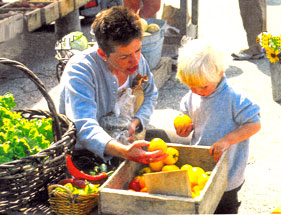
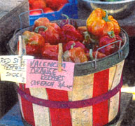
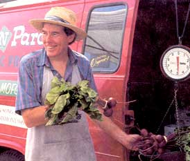
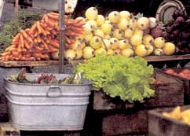
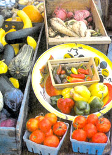

Getting the choicest meals
from local vegetable stands.
Fresher foods: Most of the fruits and vegetables at farmers' markets have been picked within the previous 24 hours, whereas supermarket produce can be weeks old. Those blueberries on special this week at our Chicago supermarket were shipped here from New Jersey, while the farmers' market berries are driven in daily from Michigan, two hours away. Last year I compared both and found the Michigan berries to be the hands-down winner, with their fresh, white "bloom" and firm skins. The supermarket berries had a shriveled look and didn't taste as sweet. (This is why I try to avoid jet-lagged produce.) Freshness is especially critical for vegetables such as corn that need to be cooked or at least refrigerated shortly after picking, before their natural sugars convert to starch. Freshness means better flavor without the loss of valuable nutrients.
Such a deal: While some farmers' market items (such as blueberries) will cost more in small quantities than you'd pay at the supermarket, other items are quite a steal. I can buy five sweet red peppers for $1 and freeze them for those winter months when they cost $5 per pound. Buying pecks or half-bushels of peaches, apples and other items for canning or freezing will save you a good deal of money. Prices vary, so tour the market before you buy.
"How we eat determines to a considerable extent how the world is used.... Eating is an agricultural act." -Wendell Berry
Variety: Where else could you find ten varieties of peppers, five types of corn and at least two kinds of peaches? My last trip to market turned up purple peppers, pattypan squash and an astounding variety of herbs. Another nearby market carries an array of heirloom tomatoes. Farmers' markets also may carry plants, fresh-cut flowers, baked goods and unusual Wisconsin cheeses like basil Brie (yum!).
Healthier, too: Even though there are few certified organic growers at the farmers' markets in the Midwest, most of the farmers try to use minimal amounts of pesticides and sprays. As my favorite melon farmer says, "There's not even enough [chemical residue] to make you glow in the dark." At the country's largest farmers' market in Madison, Wisconsin, about 60% to 70% of the farmers are using organic methods without being certified organic. And, guaranteed, you'll never find wax on farmers' market cucumbers or apples.
Moreover, many noncommercial farmers try to preserve their soil by rotating crops and feeding minerals back into the earth, which results in healthier food - a benefit not to be taken lightly. According to the Center for Disease Control, the increased consumption of fresh produce has contributed to a rise in foodborne illness. (Perhaps you may remember reading about the Michigan schoolchildren who contracted hepatitis A from Mexican strawberries and another outbreak from a parasite on Guatemalan raspberries) I'll stick to food grown and sold closer to home - food I can match whenever possible to a friendly farmer's face.
Support your local farmer. The Illinois Department of Agriculture reports that produce farms are getting scarce in northern Illinois. One farmer told me that if it wasn't for the farmers' markets, he couldn't survive. The reason the supermarket chains can't buy local produce such as blueberries is that, as one produce manager told me, "We can't count on the volume." Supermarkets plan their advertising (the flyers that you get in your newspaper) months in advance, so they can't take a chance on adverse weather conditions that could wipe out a crop. That's why, instead of those delicious Michigan cherries, we'll see Northwest cherries at our supermarket. Or we'll get those waxy, tasteless Washington State apples instead of a local heirloom variety. If we don't support our local farmers, we may one day find that our farmland has been transformed into subdivisions dotted with an occasional agri-farm. Then, we'll all be singing Joni Mitchell's old song, "They paved paradise and put up a parking lot."
White Bean and Tomato Salad
(serves 2 to 3)
Here's a quick salad that's great for lunch.
15-ounce or 19-ounce can canellini or northern beans, drained and rinsed
3 plum tomatoes (or 2 medium-size tomatoes), diced into 1/2"pieces
1 small red onion, chopped
1/2 cup chopped fresh herbs, such as parsley, basil, oregano or thyme
fresh salad greens for garnish
Dressing:
1 1/2 tablespoons each: balsamic vinegar, extra-virgin olive oil
1 large clove garlic, minced
1/2 teaspoon anchovy paste*
1/2 teaspoon salt
freshly ground pepper
This salad is best served at room temperature, within 30 minutes of prepara tion. Toss the salad ingredients together in a large bowl. In a smaller bowl, whisk the dressing until blended. Pour the dressing over the salad and toss again. Let sit for about ten minutes to let the flavors blend. Lay a few greens or arugula leaves on plates, top with white bean and tomato salad and serve.
*Anchovy paste comes in a tube and is usually found in the imported foods aisle or next to the canned tuna at your supermarket. Once opened, it will keep indefinitely in the refrigerator.
Pesto Spread
Here's an easy way to use up the basil that's usually plentiful at farmers' markets. I use this spread for grilled vegetable sandwiches topped with garden lettuce or for raw vegetable dipping. Store your bunch of basil in a water-filled glass in the refrigerator, making sure that the leaves aren't near the refrigerator coils or a cold spot. Cover the basil loosely with a plastic bag and try to use it within three days.
2 large cloves garlic, peeled
1 tablespoon pine nuts or walnuts
1 cup basil leaves, packed
1/4 teaspoon salt
dash of cayenne pepper
1 teaspoon extra-virgin olive oil
1 tablespoon lemon juice
1 tablespoon freshly grated Romano or Parmesan cheese
4 ounces "lite" cream cheese*
Toast the nuts in a dry skillet on medium heat for a minute or so, watching that they don't burn. Pick the basil leaves off the stems. In a food processor, pulse the garlic, nuts and basil until they're finely chopped. Add the spices, oil and lemon juice; pulse a few times. Add the Parmesan and cream cheese; blend well. Chill in a plastic container at least two hours before serving so the spread will thicken.
*Variation: If you like goat cheese, try using 2 ounces goat cheese and 2 ounces cream cheese in your pesto spread.
Keeping communities alive: Without farmers' markets to supplement their income, many small farms would simply not survive.
Grilled Vegetables (minus the grill)
When I want a quick and fresh vegetable sandwich, the last thing I want to do is fire up the outdoor grill. Here are my "let's pretend" grilled vegetables from the garden.
eggplant, zucchini, summer squash, red or yellow sweet peppers, red onion
olive oil
smoke oil* (organic oil)
Cut the ends off the eggplant, zucchini and/or squash and cut in half horizontally. Stand the cut vegetables up on their ends and cut into 1/8"-thick slices. Cut the peppers lengthwise into 8 strips. Slice the onion into 1/4" circles. Heat a large, nonstick skillet over medium-high heat. Brush the bottom of the pan with olive oil and smoke oil. When the oil is hot, lay the vegetables in the skillet and cook for about 2 to 3 minutes or until lightly browned. Turn the pieces over and brown the other sides.
Have a large, shallow plastic container ready. Remove the browned vegetables and pile the eggplant slices on top of each other in the container, then the zucchini, and so on. (Some of the vegetables won't appear thoroughly done, but they'll continue to cook as they sit in the container.)
Let cool at least 15 minutes; then eat or cover the container and refrigerate until later.
*We're hooked on smoke oil so we buy it by the case from the manufacturer. "Barbecue Smoke Oil" costs about $3.50 for an 8-ounce bottle. The mesquite flavor is intense, so use sparingly. Look in the gourmet section of your supermarket or health food store or have some delivered direct to your door by contacting the California Olive Oil Corp., 134 Canal St., Salem, MA 01970, (978) 745-7840.
Vegetable Medley (serves 3 to 4)
I like to throw together any combination of fresh summer vegetables (a favorite is pattypan squash) to saute and serve with crusty bread. It's enough to satisfy our appetites on a hot summer's night.
1 tablespoon extra-virgin olive oil
6 yellow or green pattypan squash, sliced into 1/2" cubes
1 large garlic clove, minced
2 cups yellow wax beans (or green beans), cut into 1 "pieces
1/2 a poblano pepper*
kernels sliced from 1 large ear of corn
salt and pepper to taste
Asiago cheese, coarsely grated
chopped, fresh basil or oregano leaves**
Cut the vegetables and put into separate bowls. Slice the poblano into thin strips and then into 1" pieces. In a large, nonstick skillet, heat the oil over medium to medium-high heat and add the pattypans. Stir every minute or so until they start to soften. Add the garlic, yellow beans and peppers and saute until they're crisp-tender, stirring about every 60 sec onds. Stir in the corn for about another minute or until done. Remove from heat and season to taste. Top with grated Asiago cheese and fresh herbs.
*A poblano pepper is a green, slightly hot pepper used in Mexican cooking. If they're not available at your farmers' market, use any color sweet pepper.
**To chop fresh basil into a chiffonade, tightly roll up three large basil leaves lengthwise. Start chopping the basil at one end into paper-thin slices that will unroll into thin strips.
Microwave Peach Crisp (serves 2)
I like Jeanne and John Van Newenhizen's fast and easy peach crisp, which doesn't require a hot oven on a hot day. The VanNewenhizens own the Double J Fruit Ranch in Benton Harbor, Michigan, and are known at the farmers' markets for their delicious fruit.
1 large or 2 smaller ripe peaches*
1/3 cup quick cooking oats
2 tablespoons dark brown sugar
2 tablespoons butter
dash of nutmeg
Peel and slice the peaches into two custard cups (or one small microwave-safe casserole) until cups are almost full. Mix the rest of the ingredients in a glass measuring cup. Microwave** on high, uncovered, until the butter melts and the oats soften (60-70 seconds). Stir the topping and spoon over the peaches. Microwave uncovered for about two minutes (rotating the cups after one minute), until the peaches are soft. Serve warm or at room temperature, topped with vanilla ice cream or frozen yogurt.
*Variation: This recipe can be made with apples or pears, but add teaspoon cinnamon.
**Microwave ovens vary depending on wattage. The cooking time here is according to my microwave.
Discover more recipes in MOTHER's KITCHEN at
www.motherearthnews.com
Related info
The Market Scam
|
 |
|
 |
|
 |
 |
 |